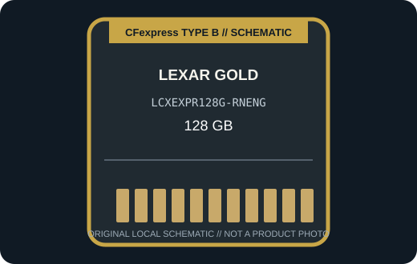

[ REMOVABLE MEDIA // PRODUCT RECORD ]
Lexar Professional CFexpress Type B GOLD 128 GB (LCXEXPR128G-RNENG)
This 128 GB GOLD Series CFexpress 2.0 Type B variant uses model LCXEXPR128G-RNENG; its performance figures are specific to this capacity. This entry describes the removable card only; the camera or reader is separate.

MEDIA ONLY: Lexar Professional CFexpress Type B GOLD 128 GB (LCXEXPR128G-RNENG). Capacity, interface generation, and compatibility refer to this model and not other cards in the same family.
Capacity, interface and compatibility
| Manufacturer model | LCXEXPR128G-RNENG; CFexpress 2.0 Type B, Professional GOLD Series |
|---|---|
| Nominal capacity | 128 GB. Usable space varies with formatting and system-reserved capacity. |
| Interface | PCIe 3.0 x2 with NVMe; Type B form factor. |
| Performance | For the 128 GB variant, Lexar specifies up to 1,750 MB/s read, up to 1,500 MB/s write, and 1,000 MB/s sustained write. Actual transfer rate depends on the host and reader. |
| Host compatibility | A firmware-enabled CFexpress Type B camera or Type B reader whose manufacturer confirms compatibility. It is not an SD, CFast, Type A, or CompactFlash card. |
| Write protection | No physical card-level write-protect switch is specified for this model; use host controls and verified backups. |
| Model-specific note | Do not transfer higher-capacity GOLD card speed ratings to this 128 GB SKU; Lexar cautions that CFexpress Type B support depends on the camera firmware and host. |
Handling and preservation
No finite shelf-life or archival-life guarantee is claimed here. Keep the card clean, dry, labeled, and in its protective case; avoid touching contacts and never remove it during a write. After use, verify files and maintain multiple checksummed copies on independent media. Before a migration or recovery, record the exact card SKU, camera/reader, firmware, filesystem, and host.
Sources and standards
- Lexar — Professional CFexpress Type B GOLD SeriesManufacturer product information for the named series or exact model; confirm SKU and host notes.
- Lexar — GOLD Series setup sheetAdditional manufacturer detail for this model or product generation.
- CompactFlash Association — CFexpress card typesStandards reference for card form factors; not a substitute for device-specific compatibility.
- Library of Congress — Digital preservation formatsIndependent preservation planning reference for removable digital media.
Manufacturer data apply to the specific product generation shown. Standards define the format family; the camera and reader manuals govern host compatibility.